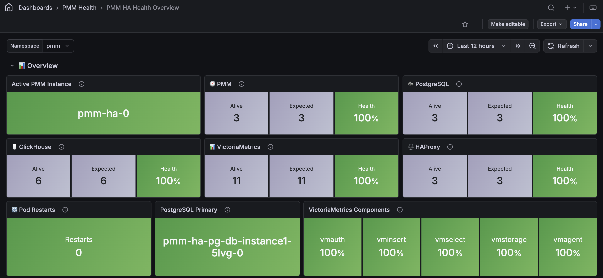

PMM HA Health Overview¶

The PMM HA Health Overview dashboard provides at-a-glance monitoring of your PMM High Availability Cluster deployment health.
Use this dashboard to quickly identify component failures, resource constraints, and stability issues across your high-availability infrastructure.
This dashboard monitors all critical components: PMM server replicas, PostgreSQL database cluster, ClickHouse query analytics storage, VictoriaMetrics time series storage, and HAProxy load balancers.
Overview¶
PMM¶
Shows the overall health status of PMM server pods with green Healthy when all pods are running normally or red Not Healthy when one or more pods are down.
In HA Cluster mode, you have three PMM server replicas providing full redundancy. If one replica fails, the remaining two continue serving requests with no user-visible impact, but you should investigate quickly to restore full redundancy.
Check the PMM Pods table in the Pod Status Details section below to see which specific pods are affected.
PostgreSQL¶
Shows the overall health status of PostgreSQL database pods. Green Healthy indicates the cluster is fully operational with primary and replicas running. Red Not Healthy signals the cluster is degraded, putting metadata and configuration storage at risk.
PostgreSQL stores PMM’s critical data including user accounts, dashboard configurations, alerting rules, and inventory information.
If the primary fails, Patroni automatically promotes a replica within seconds, but you’ll temporarily lose write capability during failover (typically under 10 seconds).
Check the PostgreSQL Pods panel in the PostgreSQL Pod’s Status section to identify whether the primary or a replica is down.
ClickHouse¶
Shows the overall health status of ClickHouse pods. Green Healthy indicates the cluster is operating normally with all keeper and database nodes running. Red Not Healthy signals Query Analytics data storage is degraded.
ClickHouse stores all Query Analytics (QAN) data. When pods fail, QAN dashboards will show incomplete query performance metrics, you won’t be able to analyze slow queries during the outage, and you’ll have permanent gaps in your historical query analysis data.
Check the ClickHouse Pods panel in the ClickHouse Pod’s Status section below to see which pods are down.
Loss of keeper nodes (which handle coordination) is more critical than loss of a single database node (which handles storage).
VictoriaMetrics¶
Shows the overall health status of VictoriaMetrics components. Green Healthy indicates all components are operational and metrics collection and querying are working properly. Red Not Healthy signals the time series infrastructure is degraded.
VictoriaMetrics uses multiple components working together:
- vminsert receives metrics from monitored services, - vmselect processes dashboard queries
- vmstorage stores time series data
- vmagent scrapes metrics from targets
- vmauth handles authentication
Check the VictoriaMetrics Pods panel in the VictoriaMetrics Pod’s Status section below to see which components are affected.
Failures in vminsert or vmstorage are most critical as they prevent metrics collection or cause data loss.
HAProxy¶
Shows the overall health status of HAProxy load balancer pods. Green Healthy means load balancing is working and traffic is properly distributed across your PMM replicas. Red Not Healthy means the load balancer has problems and you may not be able to access PMM.
HAProxy is how you get into your PMM cluster. It routes web traffic to healthy PMM server replicas and handles automatic failover when the leader changes.
If HAProxy pods go down, you can’t access the PMM web interface, API calls will fail, and automatic failover won’t work.
HAProxy is essential for accessing PMM—if it shows unhealthy, investigate immediately.
Check the panels under HAProxy Pod’s Status section below to see which HAProxy pods are down and which backend services are unavailable.
System Health Metrics¶
Overall System Health¶
Shows the overall health percentage of all your PMM HA pods as a gauge from 0 to 100%. This is calculated as (running pods/total expected pods) × 100.
Green (95-100%) means excellent health—all or nearly all your pods are running normally.
Yellow (80-95%) means some pods are down, so you should investigate, but your cluster is likely still working.
Red (below 80%) signals serious problems with multiple component failures.
A single pod failure in a well-sized cluster might only drop this to 95-98%, which is fine.
If it drops below 90%, you likely have multiple failures that need urgent attention.
Pod Count¶
Shows two values: running pods versus total expected pods. When the numbers match, all your pods are healthy.
When running is less than total, some of your pods aren’t running—check the restart tables below to see which ones.
Use this to quickly understand how many pods are down. For example, if you see 45 running out of 50 total, you know 5 pods need investigation.
Pod Restarts¶
Shows the total number of container restarts across all your pods in the last 24 hours.
Zero restarts (green) means perfect stability. One to four restarts (yellow) suggests minor issues—check which pods restarted.
Five or more restarts (red) signals stability problems with either multiple pods or repeated failures.
Restarts mean your pods are crashing and Kubernetes is automatically restarting them.
While automatic restart provides self-healing, you need to investigate why the crashes are happening.
Check the Pods with Restarts panel to see which specific pods are unstable.
Pods with Restarts¶
Lists individual pods that have restarted in the last 24 hours with their restart counts.
The table shows green for stable pods, yellow when a pod has restarted at least once, and red when it has restarted three or more times.
Use this to see which components are having problems, focus on the ones restarting most often, and check if the restarts match any changes you recently made.
If a pod has 10 or more restarts in 24 hours, it’s stuck in a crash loop—usually because of a configuration mistake or the pod doesn’t have enough CPU or memory.
Run kubectl logs <pod-name> to see what’s causing the crashes.
Resource Usage¶
CPU Usage¶
Shows CPU consumption in cores for each of your pods over time as a stacked area chart. The legend shows mean, max, and min values for each pod.
Gradual growth is normal as your monitoring workload increases. Sudden spikes may indicate problem queries, batch jobs, or other issues.
If one pod is using much more CPU than the others, it might be handling more load or have a problem.
Compare CPU usage across similar pods—for example, look at all your vmselect pods together.
If one is consistently higher than the others, traffic might not be balanced properly, or that pod has an issue.
High CPU on database pods like PostgreSQL, ClickHouse, or vmstorage during backups or maintenance is normal and expected.
Memory Usage¶
Shows working set memory consumption in bytes for each of your pods over time as a stacked area chart. The legend shows mean, max, and min values for each pod.
Steady or slowly growing memory usage is normal. Sudden jumps usually mean large queries, data imports, or memory leaks.
If memory usage is getting close to the limits you’ve set, your pods risk being killed by Kubernetes for using too much memory (called OOM kills).
If you see pods restarting and they had high memory usage right before the restart, Kubernetes killed them for exceeding their memory limit.
You’ll need to either increase the memory limits or figure out why memory usage is so high—look at query patterns, cache sizes, or other factors that might be using more memory than expected.
Storage Usage¶
PostgreSQL Storage¶
Shows your PostgreSQL persistent volume usage as a percentage from 0 to 100% in a gauge.
Green (0-70%) means you have plenty of space remaining. Yellow (70-85%) means you should watch it closely and start planning to add more storage.
Red (85-100%) is urgent—your database will stop accepting writes when it’s full.
PostgreSQL stores metadata and configuration data. While it doesn’t grow as fast as metrics or QAN data, if you run out of space, all PMM operations will stop.
If you’re getting close to the limit, either expand the persistent volume or clean up old data like backup history and audit logs.
ClickHouse Storage¶
Shows your ClickHouse persistent volume usage as a percentage from 0 to 100% in a gauge.
Green (0-70%) means you have enough space for QAN data. Yellow (70-85%) means you should plan to expand storage soon. Red (85-100%) requires immediate action.
ClickHouse stores all your Query Analytics data, which grows based on how many queries you’re running and your retention settings.
If you’re running low on space, you can reduce your QAN data retention period, expand the persistent volumes, or check that your slow query log isn’t capturing too many queries.
If ClickHouse runs out of storage, it stops collecting QAN data, which creates gaps in your query performance analysis that you can’t recover.
VictoriaMetrics Storage¶
Shows your VictoriaMetrics persistent volume usage as a percentage from 0 to 100% in a gauge.
Green (0-70%) means you have enough space for metrics retention. Yellow (70-85%) means you need to expand storage soon. Red (85-100%) is critical—VictoriaMetrics will stop accepting new metrics.
VictoriaMetrics stores all your time series metrics. How fast it grows depends on how many services and instances you’re monitoring, your metrics retention period (default is 30 days), and the cardinality of the metrics you’re collecting.
When storage fills up, VictoriaMetrics can’t store new metrics, which creates gaps in all your PMM dashboards. Keep an eye on growth trends and plan for more capacity before you run out of space.
Service Availability¶
Service Availability by Component¶
Shows the health percentage for each major component over time as a state timeline.
Green at 100% means all your pods for that component were healthy during that time. Yellow or orange (75-99%) means some pods were down but the component was still partially working. Red (below 75%) means the component had serious problems or was completely down.
Use this timeline to see when problems happened, identify which components have ongoing stability issues, and match availability drops to things you know about like deployments or maintenance.
You can also get a sense of your overall system reliability over time.
A healthy PMM HA deployment should be mostly green with only short gaps during planned maintenance or updates.
PostgreSQL Pod’s Status¶
PostgreSQL Pods¶
Shows each of your PostgreSQL pods with their status (UP or DOWN) and role (Primary or Replica). In a healthy cluster, you should see one Primary and the rest as Replicas, all showing UP in green.
If the Primary shows DOWN, a failover is either in progress or just completed. Check that a Replica was promoted to become the new Primary.
If you see multiple Primaries, you have a split-brain condition that needs immediate attention.
If there’s no Primary at all, your cluster can’t accept any writes, which is a critical failure.
Patroni handles automatic failover for you. When the Primary fails, it automatically promotes a Replica to Primary within seconds.
After a failover, verify that the new Primary is handling writes correctly.
PMM Pod’s Status¶
PMM Pods¶
Shows each of your PMM server pods with their current status. Green UP means the pod is running normally. Red DOWN means the pod has failed or isn’t running.
If one pod shows DOWN, identify which replica is affected and investigate the cause. Two or more DOWN pods means your deployment is at serious risk—investigate immediately.
If all three show DOWN, your entire PMM system is unavailable.
Use this table to identify which specific PMM server pods need attention when the PMM health indicator shows Not Healthy.
ClickHouse Pods¶
Shows each of your ClickHouse pods with their status (UP or DOWN) and role (Leader or Follower).
ClickHouse uses two types of pods: keeper nodes that handle coordination and metadata, and database nodes that handle storage.
For a healthy keeper ensemble, you should see one Leader with the rest as Followers, all showing UP. If the Leader goes DOWN, a new leader should be elected automatically within seconds.
For database pods, when all are UP, your QAN queries are working normally with full capacity.
If a database pod is DOWN, you have reduced storage capacity but QAN still works—just with less performance.
The keeper ensemble must maintain quorum to keep the cluster functioning, so losing multiple keeper nodes at once is more serious than losing a database node.
VictoriaMetrics Pods¶
Shows each VictoriaMetrics pod with its current status, organized by component type. Green UP means the pod is running normally. Red DOWN means the pod has failed.
Check for failures in vmstorage pods first—each stores a subset of your metrics data, so too many failures cause data loss. Next check vminsert pods—these receive incoming metrics, so failures create gaps in data collection.
Failures in vmselect pods reduce query capacity but don’t cause data loss. Down vmagent or vmauth pods affect metric scraping and authentication respectively.
Use this table to identify which specific components need attention when the VictoriaMetrics health indicator shows Not Healthy.
HAProxy Pod’s Status¶
HAProxy Instances¶
Shows each HAProxy pod with its current status.
Green UP means the pod is running normally and handling traffic. Red DOWN means the pod has failed.
If one pod shows DOWN, your load balancing is still working but with reduced capacity. Remaining pods handle the full traffic load. If all pods show DOWN, you can’t access PMM at all.
Investigate DOWN pods quickly to restore full redundancy and prevent a single point of failure. Check pod logs to identify whether the issue is configuration, resource limits, or connectivity problems.
Use this table to identify which specific HAProxy pods need attention when the HAProxy health indicator shows Not Healthy.
HAProxy Backends¶
Shows the health status of each backend service that HAProxy routes traffic to.
Green UP means HAProxy can reach the backend and will route traffic to it. Red DOWN means HAProxy detected the backend is unavailable and won’t route traffic there.
The table shows backends for your PMM server replicas, PostgreSQL database cluster, and other PMM infrastructure services.
HAProxy performs continuous health checks on each backend—when a backend fails its health check, HAProxy automatically stops routing traffic to it and uses the remaining healthy backends.
Backends showing DOWN during pod restarts or brief failures is normal and expected—HAProxy’s automatic routing prevents any impact on your users.
However, if backends stay DOWN for more than a few minutes, the underlying pods aren’t recovering properly and you need to investigate.
Check pod status in the tables above to identify why backends remain unavailable. Common causes include resource exhaustion, configuration errors, or failed deployments.
Dashboard Usage Tips¶
Refresh rate¶
This dashboard auto-refreshes every 30 seconds to provide near real-time monitoring.
Filters¶
Use the namespace and Helm release variables at the top to focus on your specific PMM HA deployment if you have multiple installations.
How to find what’s wrong¶
When you notice problems, follow this approach to quickly diagnose issues:
Investigation workflow¶
When you notice problems, follow this approach to quickly figure out what’s wrong:
- Start with Overall System Health gauge. If it’s below 95%, something’s wrong.
- Check Component Status panels to see which components have problems.
- Review Pod Restarts to see if pods are still crashing
- Look at the detailed pod status tables to find which specific pods failed.
- Check Resource Usage to see if pods ran out of CPU, memory, or storage.
- Review Service Availability timeline to see when things started going wrong.
Common patterns¶
- Storage full: Red storage gauges + pods crashing = expand storage immediately
- Resource exhaustion: High CPU/memory + pod restarts = increase resource limits
- Network issues: Multiple components partially down + high restart counts = investigate cluster networking
- Single pod failure: One component shows “Not Healthy” but no restarts = stuck pod requiring manual intervention